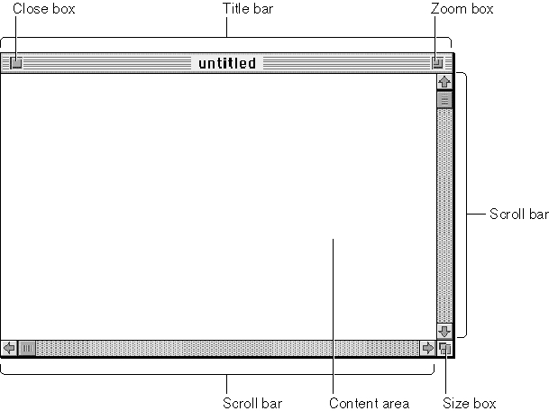

Legacy Document
Important: The information in this document is obsolete and should not be used for new development.
Important: The information in this document is obsolete and should not be used for new development.


Windows
Most applications interact with the user through windows. Figure 1-2 shows a common window and its elements. The chapter "Window Manager" in this book describes the types of windows your application can create and how to respond to user actions involving windows.
The user typically has one or more windows on the desktop, often from a number of different applications. Although the user can have multiple windows on the desktop, only one window is the active window. The active window is the window that appears frontmost on the desktop and is identified by racing stripes in its title bar. Figure 1-2 shows an active window; in Figure 1-1 on page 1-3, the window titled SalesReport is an inactive window.
All keyboard activity is directed toward the active window. You should make sure that your application follows the human interface guidelines regarding active and inactive windows. For example, you should show the scroll bars and highlight any selection in an active window belonging to your application; you should hide the scroll bars and remove highlighting from any selection in an inactive window belonging to your application. The menu bar of your application also should always reflect the state of your application's active window--that is, your application should enable only those menu commands that pertain to the active window.
You can use system software routines to assist you when your application needs to create, move, size, zoom, or update the contents of your window. The chapter "Window Manager" in this book describes how you can accomplish these tasks.